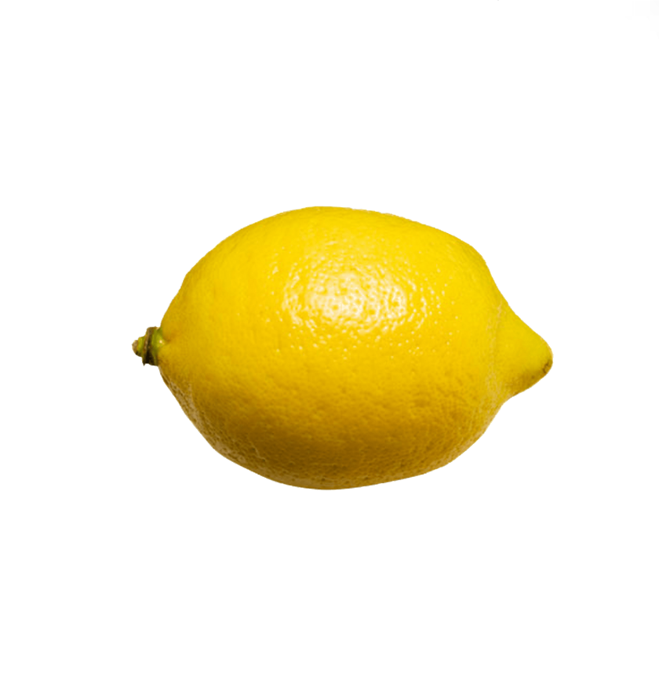

Opdracht 1. Nest de slogan selector in de banner selector en geef de slogan selector de volgende values:
Opdracht 2. Nest de span selector in de slogan selector en geef de span selector de volgende values:
Opdracht 3. Nest de icon selector in de container selector en geef de icon selector de volgende values:
Antwoorden verwerkt in SCSS bestand.
LEMONADE
homemade with fresh
ingredients
fresh lemons

real sugar
dad's recipe
Opdracht 1. Bovenin je .scss document maak je een nieuwe variabele aan met de naam
‘translucent-white’ en die geef je de waarde ‘rgba(255,255,255,0.3)’.
Zorg er nu voor dat de slogan selector een achtergrondkleur krijgt die je in de
bovenstaande variabele hebt gedefinieerd.
Opdracht 2. Er zijn verschillende datatypen die je aan een variabele in CSS kunt toewijzen.
Naast het datatype voor kleur dat we hierboven hebben gezien, zijn er ook:
- Numbers, zoals 8.11 of 12 of bijv. 10px. Merk op dat hoewel 10 een eenheid van px heeft, het nog steeds als een getal wordt gelezen.
- Strings, met en zonder aanhalingstekens. Enkele voorbeelden zijn "aardappel", 'tomaat' of span.
- Booleans, of simpelweg ‘true’ en ‘false’.
- Null, wat als een lege waarde wordt beschouwd.
Bovenin je .scss document maak je een nieuwe variabele aan van het type number met de naam icon-square-length en geef die een waarde 300px.
Zorg er nu voor dat de icon selector een width en height krijgt gelijk aan de hiervoor gedefinieerde variabele.